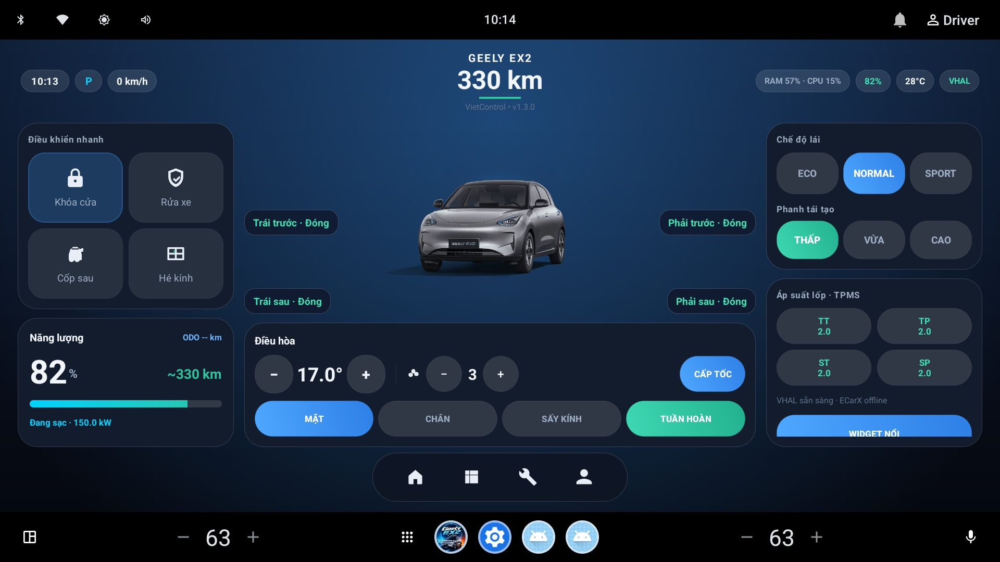
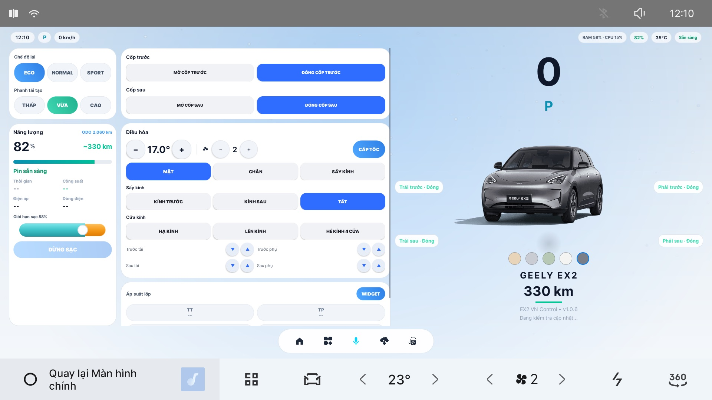
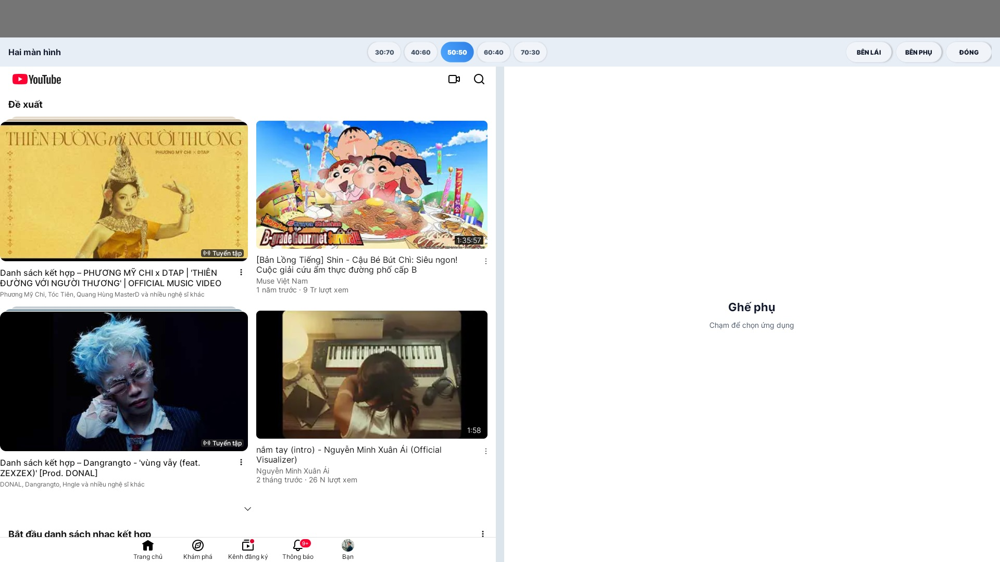

Dành riêng cho Geely EX2 · Việt Nam
Làm màn hình EX2 của bạn tiện hơn mỗi ngày
Điều khiển cửa, kính, cốp, điều hòa, chế độ lái và sạc chỉ bằng một chạm. Kho app giải trí, dẫn đường, camera gương khi rẽ — gom hết vào một ứng dụng tiếng Việt.

Ba bước, làm một lần
Sau khi cài xong, mọi thứ thao tác ngay trên màn hình xe. Chỉ cần Wi‑Fi (phát từ điện thoại là đủ) cho kho app, giọng nói và cập nhật.
Mở cổng cài app
Làm theo hướng dẫn từng bước để mở ADB trên màn hình xe bằng USB. Chỉ làm một lần duy nhất.
Cài EX2 VN Control
Dùng công cụ cài đặt cho Windows hoặc Mac, hoặc lệnh ADB. Ứng dụng tự cấp các quyền cần thiết.
Dùng thử & kích hoạt
Nhập số Zalo để nhận hỗ trợ, dùng thử đầy đủ tính năng trước khi quyết định.
Lưu ý: mở ADB là thao tác can thiệp hệ thống. Hãy làm đúng hướng dẫn, không tắt máy hay rút USB giữa chừng. Nhóm Xe Chơi hỗ trợ từng bước trong nhóm Zalo.
Mọi nút hay dùng, trên một màn hình
Không phải lục từng menu của xe. Mở app là thấy trạng thái cửa, pin, điều hòa và áp suất lốp.
Cửa, cốp, kính và điều hòa
- Khóa cửa, xem từng cửa đang mở hay đóng
- Mở / đóng cốp trước và cốp sau
- Hạ, lên, hé kính từng cửa hoặc cả bốn cửa
- Điều hòa: nhiệt độ, quạt, hướng gió, gió trong / ngoài, sấy kính
- Nhiệt độ hiển thị dạng số trên thanh điều hòa của xe
- Hiển thị áp suất lốp (TPMS)

Chế độ lái & phanh tái tạo
Êm / Thoải mái / Sport và phanh tái tạo nhẹ / vừa / mạnh. Xe tắt máy bật lại vẫn nhớ lựa chọn của bạn.
Tiếng cảnh báo AVAS
Tắt tiếng hoặc đổi âm thanh cảnh báo người đi bộ theo ý muốn.
Rửa xe một chạm
Nút “Rửa xe” ngay trên màn hình chính để chuẩn bị xe khi vào tiệm rửa.
Biết rõ xe đang tốn bao nhiêu điện
Pin & tầm đi
% pin, số km còn đi được, trạng thái sạc và giới hạn sạc. Hiện % pin ngay trên thanh trạng thái.
Hành trình
Km, kWh và lộ trình GPS bám đường bản đồ. Xem theo 7 ngày, 30 ngày hoặc 3 tháng.
Sổ sạc
Ghi kWh, loại sạc AC/DC và tiền điện của mỗi lần cắm sạc.
Trụ sạc gần bạn
Tìm trụ trong bán kính 20 km (EV HUB), lọc theo hãng bạn đã nạp tiền.
Thêm những thứ màn hình gốc còn thiếu
Chia hai màn hình, vẫn giữ thanh bar của xe
Xem bản đồ một bên, nhạc hoặc video một bên. Chọn tỷ lệ 30:70 đến 70:30, đổi bên lái / bên phụ chỉ với một chạm.
- Nút nổi: hiện trên màn Home hoặc trên mọi app
- 3 ô mở app nhanh, giữ để đổi sang app khác
- Biểu tượng Wi‑Fi và chia màn trên thanh bar

Sáng, tối — tự theo ngày đêm của xe
Giao diện đổi theo chế độ ngày / đêm của xe, độ sáng ban ngày và ban đêm chỉnh riêng. Khi nghỉ, màn hình tự tối đi nhưng nhạc vẫn chạy.
- Giao diện sáng / tối tự động
- Độ sáng ngày và đêm tách riêng
- Tự tối màn khi nghỉ, không ngắt nhạc
- Tự bắt Wi‑Fi, đổi màu xe trên màn hình

Nhìn thấy điểm mù khi rẽ
Bật xi nhan trái hoặc phải, hình camera gương bên đó tự hiện lên — chỉ phần bánh sau, đủ để quan sát mà không che màn hình.
Camera gương khi rẽ
Trái / phải theo xi nhan. Không tự bật khi bật cảnh báo nguy hiểm (hazard).
Camera lùi nền tối bản Pro
Nền tối thay cho nền trắng chói mắt khi lùi xe ban đêm.
Tách khỏi 360°
Tắt camera gương là trả lại cho camera 360° của xe, không xung đột.
Ra lệnh bằng giọng nói tiếng Việt
Bấm phím thoại trên vô lăng, nghe tiếng "ting" rồi nói tự nhiên. Có sóng âm trên thanh bar để biết xe đang nghe.
- Hiểu tiếng Việt và tiếng Anh qua Google (cần Wi‑Fi)
- Hiểu câu nói tự nhiên, phản hồi nhanh
- Gán phím mũi tên vô lăng: chuyển bài, chế độ lái, phanh tái sinh, quạt
- Chuyển bài được cả trên YouTube và YT Music
“Nóng quá”
Xe tự hiểu và làm mát cho bạn.
“Mát nhanh lên”
Làm lạnh nhanh khoang xe.
“Bật điều hòa lên”
Bật điều hòa, không cần chạm màn hình.
“Tăng quạt”
Chỉnh gió mạnh hơn hoặc nhỏ lại.
Ví dụ một số câu lệnh. Bạn có thể nói nhiều cách khác nhau, app hiểu theo ý.
Từ điện thoại sang xe, không cần dây
Gửi ảnh qua mã QR
Quét mã QR trên màn xe, chọn ảnh JPG, PNG, HEIF trên điện thoại — ảnh vào kho hình của xe.
Gửi link Google Maps
Chia sẻ địa điểm từ điện thoại, xe tự mở và dẫn đường tới đó.
Báo qua Telegram
Nhận thông báo khi bắt đầu / kết thúc sạc, và khi bạn quên tắt máy.
Cài app lên xe chỉ bằng vài chạm
Kho app riêng của Xe Chơi: app đã thử trên xe, cài trực tiếp từ màn hình, có giọng đọc tiếng Việt cho chỉ đường.
Cảnh báo tốc độ và camera phạt nguội.
Tìm địa điểm, xem giao thông, đăng nhập qua microG.
Cảnh báo tắc đường, tai nạn, bắn tốc độ.
Xem video không quảng cáo.
Nghe nhạc YouTube Music không quảng cáo.
Nhạc trực tuyến quốc tế và nhạc MP3 Việt Nam.
Danh sách app trong kho được cập nhật thường xuyên. Các app của bên thứ ba thuộc về nhà cung cấp tương ứng.
Cập nhật ngay trên xe
Có bản mới, app báo và cập nhật qua OTA — không cần cắm máy tính.
Giữ app luôn chạy
Không để xe tự tắt app khi thu xuống nền; tắt app chạy ngầm khi tắt xe để tiết kiệm tài nguyên.
Gọn gàng ngăn app
Ẩn các app hỗ trợ khỏi ngăn app của xe, chỉ giữ lại những app bạn thực sự dùng.
Câu hỏi thường gặp
Ứng dụng chạy trên xe nào?
Dành riêng cho Geely EX2 bản Việt Nam (màn hình Android 9). Một số tính năng như camera lùi nền tối chỉ có trên bản Pro.
Cài ứng dụng có mất bảo hành không?
Đây là dự án cộng đồng, không chính thức và không liên kết với Geely. Việc mở ADB là can thiệp vào hệ thống, bạn tự cân nhắc và chịu trách nhiệm với xe của mình.
Có cần Internet không?
Điều khiển xe hoạt động không cần mạng. Kho app, giọng nói qua Google, trụ sạc, bản đồ và cập nhật cần Wi‑Fi — phát từ điện thoại là đủ.
Có thể dùng thử trước khi mua không?
Có. Bạn cài và dùng thử đầy đủ tính năng trước khi quyết định. Liên hệ nhóm Zalo để biết chi tiết.
Gặp lỗi khi cài thì sao?
Hầu hết lỗi đã có cách xử lý trong hướng dẫn. Nếu vẫn chưa được, nhắn trong nhóm Zalo Xe Chơi để được hỗ trợ.
Ứng dụng có tự cập nhật không?
Có. Vào Cài đặt → Kiểm tra cập nhật, hoặc để app tự báo khi có bản mới.
Sẵn sàng nâng cấp màn hình EX2?
Vào nhóm Zalo Xe Chơi để nhận bản dùng thử, hướng dẫn cài đặt và được hỗ trợ trực tiếp bởi cộng đồng chủ xe EX2.